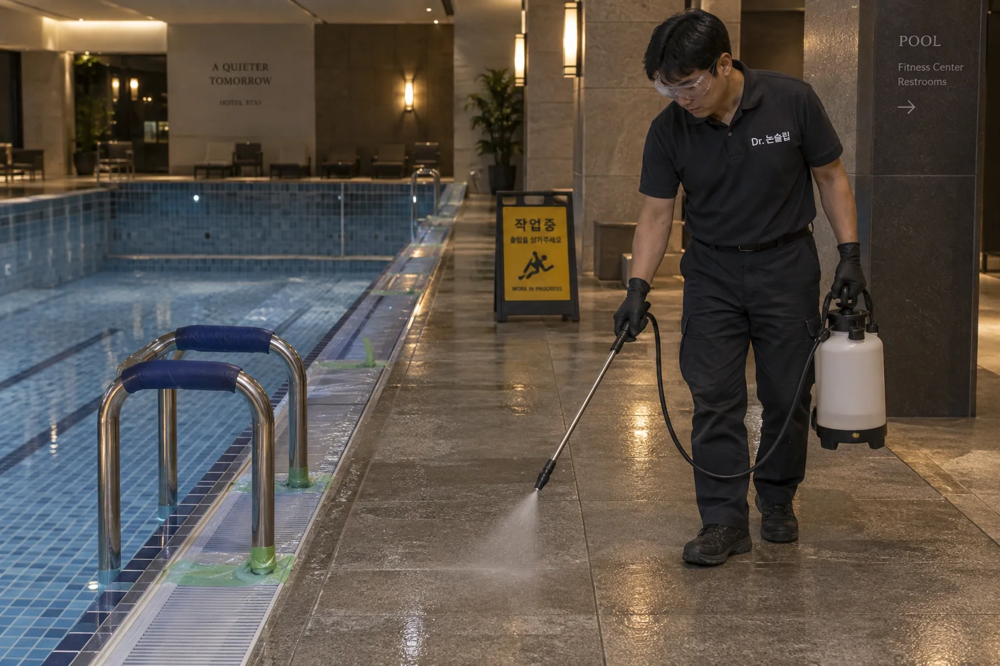

쉬러 온 고객의 하루가,
낙상으로 끝나지 않도록.
빗물이 들어오는 로비, 물 밖으로 나와 걷는 통로.
고객의 부상과 시설에 대한 불안으로 이어지기 전에 미끄러운 바닥을 개선하세요.

고객이 걷는 길에,
미끄럼방지를 더합니다.
로비부터 수영장 통로·샤워실까지. 새 코팅층을 덧씌우지 않는 표면 처리로 미끄럼 저항을 개선합니다. 바닥의 색감과 광택은 샘플에서 함께 비교합니다.
- 젖는 통로의 개선
- 로비 출입구, 수영장 주변, 샤워실의 이용 동선에 적용.
- 미관까지 살피는 시공
- 기존 마감과 샘플의 색·광택을 비교한 뒤 작업.
- 시설 운영에 맞춰
- 고객 이용 시간과 대체 동선을 고려해 구역을 나눠 진행.
로비의 신발 동선도,
수영장의 맨발 동선도.
같은 시설이라도 바닥 재질과 이용 방식은 다릅니다. 각 공간의 젖은 상태를 기준으로 작은 구역에서 먼저 확인하세요. 고객이 실제로 걷는 길에 필요한 시공을 제안합니다.
호텔·수영시설 방문 상담사진은 시공 과정과 적용 공간을 설명하기 위한 브랜드 이미지입니다.